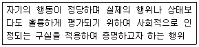
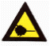
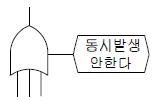
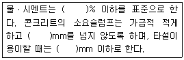

건설안전산업기사 (2011-03-20 기출문제)
1과목: 산업안전관리론
1. 다음 중 재해발생의 원인에 있어 불안전한 상태에 해당하지 않는 것은?
- 설비 및 장비의 결함
- 부적절한 조명 및 환기
- 작업장소의 정리ㆍ정돈 불량
- 보호구 착용 불량
(정답률: 63%)
2. 의무안전인증 대상 보호구 중 안전모의 시험성능기준의 항목이 아닌 것은?
- 충격흡수성
- 발수성
- 내전압성
- 턱끈풀림
(정답률: 67%)

3. 다음 중 적성검사할 때 포함되어야 할 주요 요소로 적절하지 않은 것은?
- IQ 검사
- 형태식별 능력
- 운동속도 및 손작업 능력
- 플리커(flicker) 검사
(정답률: 62%)
4. 산업안전보건법상 사업 내 안전ㆍ보건교육 중 채용시의 교육 및 작업내용 변경시의 교육 내용에 해당하는 것은?
- 물질안전보건자료에 관한 사항
- 건강증진 및 질병 예방에 관한 사항
- 유해ㆍ위험 작업환경 관리에 관한 사항
- 표준안전작업방법 및 지도 요령에 관한 사항
(정답률: 50%)
5. 객관적인 위험을 자기 나름대로 판정해서 의지결정을 하고 행동에 옮기는 인간의 심리특성을 무엇이라고 하는가?
- 세이프 테이킹(safe taking)
- 액션 테이킹(action taking)
- 리스크 테이킹(risk taking)
- 휴먼 테이킹(human taking)
(정답률: 69%)
6. A 사업장의 도수율이 10이고 강도율이 1.7이라고 하면 이 사업장의 종합재해지수(FSI)는 약 얼마인가?
- 2.74
- 3.74
- 3.87
- 4.12
(정답률: 56%)
7. 적응기제 중 다음 설명에 해당하는 것은?

- 보상
- 합리화
- 동일시
- 승화
(정답률: 60%)
8. 다음 중 Super. D. E의 역할이론에 포함되지 않는 것은?
- 역할 갈등
- 역할 기대
- 역할 조성
- 역할 유지
(정답률: 38%)
9. 다음 중 교육과제에 정통한 전문가 4 ~ 5명이 피교육자 앞에서 자유로이 실시한 다음에 피교육자 전원이 참가하여 사회자의 사회에 따라 토의하는 방식을 무엇이라 하는가?
- 포럼(forum)
- 패널 디스커션(panel discussion)
- 심포지엄(symposium)
- 버즈 세션(buzz session)
(정답률: 62%)
10. 다음 중 기능교육의 3원칙에 해당하지 않는 것은?
- 준비
- 안전의식 고취
- 위험작업의 규제
- 안전작업 표준화
(정답률: 33%)
11. 동기부여(motivation)에 있어 동기가 가지는 성질을 설명한 것으로 적절하지 않은 것은?
- 행동을 촉발시키는 개인의 힘을 뜻하는 활성화
- 일정한 강도와 방향을 지닌 행동을 유지시키는 지속성
- 개인에게 부여된 목표달성의 정도를 평가하는 합리성
- 노력의 투입을 선택적으로 한 방향으로 지향하도록 하는 통로화
(정답률: 44%)
12. 다음 중 산업안전보건법상 안전보건관리규정에 반드시 포함되어야 할 내용이 아닌 것은?
- 안전ㆍ보건교육에 관한 사항
- 생산성과 품질향상에 관한 사항
- 작업장 안전관리에 관한 사항
- 안전ㆍ보건 관리조직과 그 직무에 관한 사항
(정답률: 75%)
13. 안전검사 대상 유해ㆍ위험기계 중 크레인의 경우 사업장에 설치가 끝난 날부터 몇 년 이내에 최초 안전검사를 실시하여야 하는가?
- 6개월
- 1년
- 2년
- 3년
(정답률: 37%)
14. 다음 중 재해사례연구에 관한 설명으로 틀린 것은?
- 재해사례연구는 주관적이며 정확성이 있어야 한다.
- 문제점과 재해요인의 분석은 과학적이고, 신뢰성이 있어야 한다.
- 재해사례를 관계로 하여 그 사고와 배경을 체계적으로 파악한다.
- 재해요인을 규명하여 분석하고 그에 대한 대책을 세운다.
(정답률: 77%)
15. 산업재해에 있어 인명이나 물적 등 일체의 피해가 없는 사고를 무엇이라 하는가?
- Near Accident
- Good Accident
- True Accident
- Original Accident
(정답률: 74%)
16. 다음 중 재해예방의 4원칙으로 틀린 것은?
- 예방 가능의 원칙
- 손실 우연의 원칙
- 원인 계기의 원칙
- 선취 해결의 원칙
(정답률: 66%)
17. 직장에서의 부적응 유형 중 자기 주장이 강하고 빈약한 대인관계를 가지고 있는 성격의 소유자로 사소한 일에 있어서도 타인이 자신을 제외했다고 여겨 악의를 나타내는 인격을 무엇이라 하는가?
- 망상인격
- 분열인격
- 무력인격
- 강박인격
(정답률: 72%)
18. 산업안전보건법상 안전ㆍ보건표지 중 “인화성물질경고”에 해당하는 것은?

(정답률: 83%)
19. 다음 중 리더가 가지고 있는 세력의 유형이 아닌 것은?
- 보상세력(reward power)
- 합법세력(legitimate power)
- 전문세력(expert power)
- 위임세력(entrust power)
(정답률: 64%)
20. 위험예지훈련 4R 방식 중 각 라운드(Round)별 내용이 올바르게 연결된 것은?
- 1R - 목표설정
- 2R - 본질추구
- 3R - 현상파악
- 4R - 대책수립
(정답률: 73%)
2과목: 인간공학 및 시스템안전공학
21. 시스템안전프로그램계획(SSPP)을 이행하는 과정 중 최종분석단계에서 위험의 결정 인자가 아닌 것은?
- 가능 효율성
- 위험감축
- 피해가능성
- 폭발빈도
(정답률: 42%)
22. 다음 중 교체 주기와 가장 밀접한 관련성이 있는 보전방식은?
- 보전예방
- 생산보전
- 품질보전
- 예방보전
(정답률: 44%)
23. 상대습도가 100%, 온도 21℃일 때 실효온도(effectivetemperature)는 얼마인가?
- 10.5℃
- 19℃
- 21℃
- 31.5℃
(정답률: 52%)
24. 다음 중 인체측정 자료를 응용하고자 할 경우 최대 치 수 기준으로 적용하기에 적절하지 않은 것은?
- 문의 높이
- 선반의 높이
- 통로의 높이
- 비상구의 높이
(정답률: 71%)
25. 심장 근육의 활동정도를 측정하는 전기 생리신호로 신체적 작업 부하 평가 등에 사용할 수 있는 것은?
- ECG
- EEG
- EOG
- EMG
(정답률: 36%)
26. 작업자가 앉아서 수작업을 하는 경우 기능을 편히 할 수 있는 공간의 외곽 한계를 무엇이라 하는가?
- 파악한계
- 최대작업역
- 정상작업역
- 접촉한계
(정답률: 41%)
27. 다음 중 FT도에서 컷셋(cut set)에 관한 설명으로 틀린것은?
- 시스템의 약점을 표현한 것이다.
- 정상사상(Top event)을 발생시키는 조합이다.
- 시스템이 고장나지 않도록 하는 사상의 조합이다.
- 일반적으로 Fussell Algorithm을 이용한다.
(정답률: 51%)
28. 다음 중 통제비에 관한 설명으로 틀린 것은?
- C/D비 라고도 한다.
- 최적통제비는 이동시간과 조정시간의 교차점이다.
- 매슬로우(Maslow)가 정의하였다.
- 통제기기와 시각표시 관계를 나타내는 비율이다.
(정답률: 63%)
29. 다음 중 체계 설계 과정의 주요 단계에서 가장 먼저 실시해야 하는 것은?
- 기본설계
- 체계의 정의
- 계면설계
- 목표 및 성능 명세 결정
(정답률: 65%)
30. 시스템안전의 수명주기에서 생산물의 적합성을 검토하는 단계는?
- 구상단계
- 정의단계
- 생산단계
- 개발단계
(정답률: 28%)
31. 다음 중 인간-기계 체계에 의해 수행하는 기본 기능의 유형이 아닌 것은?
- 감지
- 정보보관
- 궤환
- 행동
(정답률: 58%)
32. 다음 중 아날로그(analogue) 표시장치의 선택시 고려해야 할 사항으로 가장 적절한 것은?
- 일반적으로 고정눈금에서 지침이 움직이는 것이 좋다.
- 온도계나 고도계에 사용되는 눈금이나 지침은 수평표시가 바람직하다.
- 눈금의 증가는 시계반대 방향이 적합하다.
- 이동요소의 수동조절이 필요할 때에는 지침보다 눈금을 조절할 수 있어야 한다.
(정답률: 59%)
33. 운전자가 직무를 수행하지만 틀리게 수행함으로써 발생하는 작위(commission) 실수의 범주에 포함되지 않는 것은?
- 생략착오
- 시간착오
- 순서착오
- 정성적착오
(정답률: 29%)
34. 기본사상 ①과 ②가 OR gate로 연결되어 있는 FT도에서 정상사상(top event)의 발생확률은 얼마인가?(단, 기본사상 ①과 ②의 발생확률은 각각 1×10-3/h, 1.5×10-2/h 이다.)
- 0.008
- 0.015985
- 0.07555
- 0.15085
(정답률: 58%)
35. 다음 중 FT도에서 [그림]과 같은 기호의 명칭에 해당하는 것은?

- OR게이트
- 배타적 OR게이트
- 조합 OR게이트
- 우선적 OR게이트
(정답률: 48%)
36. 다음 중 소음에 의한 청력 손실이 가장 잘 발생하는 진동수는?
- 100Hz
- 1000Hz
- 2000Hz
- 4000Hz
(정답률: 56%)
37. 다음 중 안전가치분석의 특징으로 틀린 것은?
- 기능위주로 분석한다.
- 그룹 활동은 전원의 중지를 모은다.
- 특정 위험의 분석을 위주로 한다.
- 왜 비용이 드는가를 분석한다.
(정답률: 44%)
38. 음압수준이 120dB인 경우 1000Hz에서의 phon값과 sone 값으로 옳은 것은?
- 100phon, 64sone
- 100phon, 128sone
- 120phon, 128sone
- 120phon, 256sone
(정답률: 38%)
39. 광원의 밝기가 100cd 이고, 10m 떨어진 곡면을 비출 때의 조도는 몇 lux 인가?
- 1
- 10
- 100
- 1000
(정답률: 45%)
40. 다음 중 누적손상장애(CTDs)의 원인으로 거리가 먼 것은?
- 장시간 진동공구의 사용
- 과도한 힘의 사용
- 높은 장소에서의 작업
- 부적절한 자세에서의 작업
(정답률: 65%)
3과목: 건설시공학
41. 한중콘크리트 생산시 유의사항으로 옳지 않은 것은?
- 동결한 골재나 눈ㆍ얼음이 포함된 골재는 사용해서는 안된다.
- 재료를 가열할 경우 직접 불꽃에 대어 가열 효과를 높이는 것이 좋다.
- 시멘트는 믹서 내 재료의 온도가 40℃ 이하가 될 때 투입한다.
- AE제, AE 감수제 등을 사용하고 공기량을 크게 한다.
(정답률: 69%)
42. 다음 중 2개 이상의 기둥을 한 개의 기초판으로 받치는 기초는?
- 독립기초
- 복합기초
- 피어기초
- 온통기초
(정답률: 67%)
43. 공사에 필요한 특기 시방서에 기재하지 않아도 되는 사항은?
- 인도시 검사 및 인도시기
- 각 부위별 시공방법
- 각 부위별 사용재료
- 사용재료의 품질
(정답률: 67%)
44. 다음은 수밀콘크리트의 배합에 대한 내용이다. ( )속에 적합한 수치는?

- 40, 150, 150
- 55, 120, 180
- 40, 160, 140
- 50, 180, 120
(정답률: 64%)
45. 현장에서 철근공사와 관련된 사항으로 옳지 않은 것은?
- 철근공사 착공 전 구조도면과 구조계산서를 대조하는 확인작업 수행
- 도면오류를 파악한 후 정정을 요구하거나 철근상세도를 구조평면도에 표시하여 승인 후 시공
- 품질이 규격값 이하이거나 6% 이상의 단면 결손 철근 사용배제
- 구부러진 철근을 다시 펴는 가공작업을 거친 후 재 사용
(정답률: 81%)
46. 아일랜드 공법과 역순의 흙파기 공사과정으로 이루어진 공법은?
- 오픈 컷(Open cut)공법
- 트렌치 컷(Trench cut)공법
- 케이슨(Caisson)공법
- 개방잠함(Open caisson)공법
(정답률: 62%)
47. 콘크리트 이어치기의 위치에 관한 설명 중 옳지 않은 것은?
- 캔틸레버보는 지점부분에서 수직으로 한다.
- 보나 바닥판의 이음은 그 간사이의 중앙부에서 수직으로 한다.
- 기둥은 슬래브 상단에서 이어친다.
- 콘크리트의 어어치기는 원칙적으로 응력이 적은 곳에서 한다.
(정답률: 38%)
48. 철공공사 강재 절단 시 고려해야할 내용 중 옳지 않은 것은?
- 수동절단은 경미한 공사에는 거의 사용되지 않는다.
- 절단면은 도면에 특기가 표시된 것 외에는 측선에 수직이어야 한다.
- 절단면은 심한 톱날흠, 절삭남김, 파형, 슬래그부착 등이 있을 때 그라인더로 갈아서 제거한다.
- 강재의 절단은 자동가스절단 또는 Frame Planner로 절단하며, 전단 절단하는 경우 강재의 판 두께는 13mm 이하로 한다.
(정답률: 63%)
49. 현장용접 시 발생하는 화재에 대한 예방조치와 가장 거리가 먼 것은?
- 용접기의 완전한 접지(earth)를 한다.
- 용접부분 부근의 가연물이나 인화물을 치운다.
- 착의, 장갑, 구두 등을 건조상태로 한다.
- 불꽃이 비산하는 장소에 주의한다.
(정답률: 80%)
50. Earth Anchor 시공에서 앵커의 스트랜드는 어디에 장착 되는가?
- Angle Bracket
- Packer
- Sheath
- Anchor Head
(정답률: 61%)
51. Under Pinning 공법을 적용하기에 부적합한 경우는?
- 인접 지상구조물의 철거시
- 지하구조물 밑에 지중구조물을 설치할 때
- 기존구조물의 근접한 굴착시 구조물의 침하나 경사를 미연에 방지할 경우
- 기존구조물의 지지력 부족으로 건물에 침하나 경사가 생겼을 때 이것을 복원하는 경우
(정답률: 63%)
52. 수평버팀대식 흙막이 공법을 적용하는 것이 가장 타당한 경우는?
- 폭이 넓고 길이가 긴 기초파기를 할 경우
- 파낸 지반이 단단하고 넓은 대지인 경우
- 좁은 면적에서 깊은 기초파기를 할 경우
- 기초파기 깊이가 얕고 근접건물도 없는 경우
(정답률: 52%)
53. 석회와 알루미나 성분을 많이 포함한 시멘트로서 보통 포틀랜드 시멘트의 7일 강도를 3일만에 발현 시킬 수 있는 것은?
- 저열 포틀랜드 시멘트
- 조강 포틀랜드 시멘트
- 중용열 포틀랜드 시멘트
- 백색 포틀랜드 시멘트
(정답률: 67%)
54. 말뚝 설치공법 중 모래층 또는 진흙층 등에 고압으로 물을 분사시켜 수압에 의해 지반을 무르게 만든 다음 말뚝을 박는 공법은?
- 디젤 해머 공법
- 진동 공법
- 압입 공법
- 워터 젯 공법
(정답률: 70%)
55. AE 공기량에 대한 설명 중 옳지 않은 것은?
- AE 공기량은 진동을 주면 감소한다.
- AE 공기량은 모래의 입도에 영향이 크다.
- AE 공기량은 온도가 높아질수록 증가한다.
- AE제를 넣을수록 공기량은 증가한다.
(정답률: 49%)
56. 철골공사의 철골부재 용접에서 용접 결함이 아닌 것은?
- 언더 컷(Under cut)
- 오버 랩(Over lap)
- 위핑(Weeping)
- 블로 홀(Blow hole)
(정답률: 75%)
57. 콘크리트의 경화 후 거푸집 제거 작업의 주의사항 중 옳지 않은 것은?
- 진동, 충격 등을 주지 않고 콘크리트가 손상되지 않도록 순서대로 제거한다.
- 지주를 바꾸어 세울 동안에는 상부의 작업을 제한하여 적재하중을 적게 하고, 집중하중을 받는 부분의 지주는 그대로 둔다.
- 제거한 거푸집은 재사용할 수 있도록 적당한 장소에 정리하여 둔다.
- 구조물의 손상을 고려하여 남은 거푸집 쪽널은 그대로 두고 미장공사를 한다.
(정답률: 72%)
58. 다음 중 콘크리트 공사와 관련된 장비가 아닌 것은?
- 피니셔(Finisher)
- 진동기(Vibrator)
- 믹서(Mixer)
- 항타기(air hammer)
(정답률: 70%)
59. 수입을 수반한 공공 프로젝트에 있어서 자금을 조달하고 설계ㆍ엔지니어링, 시공전부를 도급받아 시설물을 완성하고, 그 시설을 10~30년 동안 운영하는 것으로 운영수입으로부터 투자자금을 회수한 후 발주자에게 그 시설을 인도하는 방식은?
- BOT(Build-Operate-Transfer)
- Partnering 방식
- Project management 방식
- Design Build 방식
(정답률: 73%)
60. 다음 중 철골 부재간 사이를 트이게 한 홈인 개선부를 뜻하는 용어는?
- 가우징(Gouging)
- 스패터(Spatter)
- 그루브(Groove)
- 위핑(Weeping)
(정답률: 37%)
4과목: 건설재료학
61. 시멘트의 비표면적을 구하는 블레인시험은 무엇을 측정하기 위한 것인가?
- 비중
- 수화속도
- 안전성
- 분말도
(정답률: 51%)
62. 실내의 라디에이터 커버, 환기구멍 등에 사용되는 금속가공 제품은?
- 펀칭메탈(punching metal)
- 벤틸레이터(ventilator)
- 리브라스(rib lath)
- 논슬립(non-slip)
(정답률: 63%)
63. 미장공사에서 코너비드가 사용되는 곳은?
- 계단 손잡이
- 기둥의 모서리
- 거푸집 가장자리
- 화장실 칸막이
(정답률: 77%)
64. 다음 중 회반죽에 여물을 넣는 가장 주된 이유는?
- 균열을 방지하기 위하여
- 강도를 높이기 위하여
- 경화속도를 높이기 위하여
- 경도를 높이기 위하여
(정답률: 58%)
65. 실적률이 큰 골재를 사용한 콘크리트에 대한 설명 중 옳지 않은 것은?
- 단위 시멘트량을 줄일 수 있다.
- 콘크리트의 마모저항의 증대를 기대할 수 있다.
- 콘크리트의 내구성 및 강도를 높일 수 있다.
- 콘크리트의 투수성이나 흡습성이 커진다.
(정답률: 52%)
66. 목재의 조직에 대한 설명으로 옳지 않은 것은?
- 수간의 중심부에는 수심이라 불리는 약한 부분이 있다.
- 심재는 색이 진하고 수분이 적고 강도가 크다.
- 봄에 이루어진 목질부를 춘재라 한다.
- 수간의 둘레에 씌워져 있는 껍질을 형성층이라 한다.
(정답률: 54%)
67. 콘크리트의 건조수축에 대한 설명으로 옳은 것은?
- 단위수량이 증가하면 건조수축량이 감소한다.
- 부재치수가 클수록 건조수축량이 적다.
- 골재 중에 포함한 미립분이나 점토는 건조 수축을 감소시킨다.
- 습윤양생기간은 건조수축에 큰 영향을 준다.
(정답률: 33%)
68. 콘크리트의 강도를 결정하는 변수에 대한 설명으로 옳지 않은 것은?
- 물시멘트가 일정한 콘크리트에서 공기량 증가에 따른 콘크리트 강도는 감소한다.
- 물시멘트비가 일정할 때 빈배합콘크리트가 부배합의 경우보다 높은 강도를 낼 수 있다.
- 콘크리트 비빔방법 중 손비빔으로 하는 것보다 기계비빔으로 하는 것이 강도가 커진다.
- 물시멘트비가 일정할 때 굵은 골재의 최대 치수가 클수록 콘크리트의 강도는 커진다.
(정답률: 27%)
69. 철근 콘크리트 바닥판 밑에 반자틀이 계획되어 있음에도 불구하고 실수로 인하여 인서트(insert)를 설치하지 않았다고 할 때 인서트의 효과를 낼 수 있는 철물설치방법으로 옳지 않은 것은?
- 익스팬션 볼트(expansion bolt) 설치
- 스크루 앵커(screw anchor) 설치
- 드라이브 핀(drive pin) 설치
- 개스킷(gasket) 설치
(정답률: 55%)
70. 석재의 선택이나 시공 시 주의사항과 가장 거리가 먼 것은?
- 치수가 1m3 이상으로 지나치게 큰 것은 피하도록 한다.
- 석재는 취약하므로 구조재는 직압력재로만 사용하도록 한다.
- 외부나 바닥에 사용할 때는 내수성 및 내구성에 주의 하도록 한다.
- 석재의 모양은 예각으로 하고 재질에 따라 적당한 가공을 하도록 한다.
(정답률: 46%)
71. 유화재를 써서 아스팔트를 미립자로 수중에 분산시킨 다갈색 액체로서 깬 자갈의 점결제 등으로 쓰이는 아스팔트 제품은?
- 아스팔트 프라이머
- 아스팔트 에멀젼
- 아스팔트 그라우트
- 아스팔트 컴파운드
(정답률: 54%)
72. 회반죽은 공기 중의 무엇과 반응하여 화학변화를 일으켜 경화하는가?
- 산소
- 질소
- 수소
- 탄산가스
(정답률: 64%)
73. 공기 중에 환원력이 커서 산화가 쉽고, 이온화 경향이 가장 큰 금속은?
- Al
- Pb
- Fe
- Cu
(정답률: 49%)
74. 기본 점성이 크며 내수성, 내약품성, 전기절연성이 우수 하며 금속, 플라스틱, 도자기, 유리, 콘크리트 등의 접합에 사용되는 접착제는?
- 아크릴수지 접착제
- 페놀수지 접착제
- 에폭시수지 접착제
- 멜라민수지 접착제
(정답률: 70%)
75. 콘크리트의 중성화에 관한 설명으로 옳지 않은 것은?
- pH가 5.0 정도의 산성인 콘크리트가 pH 7.0 정도의 중성을 띠게 되는 현상을 말한다.
- 콘크리트의 중성화는 주로 공기 중의 이산화탄소 침투에 기인하는 것이다.
- 중성화가 진행되어도 콘크리트의 강도는 거의 변화가 없으나, 중성화되면 철근이 부식하기 쉽게 된다.
- 콘크리트의 중성화에 영향을 미치는 요인으로는 물시멘트비, 시멘트의 골재의 종류, 혼화재료의 사용유무 등이 있다.
(정답률: 55%)
76. 소량의 안료를 첨가하여 건축물 내외면의 마감, 각종 인조석 제조에 사용되는 시멘트는?
- 백색포틀랜드 시멘트
- 고로슬래그 시멘트
- 중용열포틀랜드 시멘트
- 알루미나 시멘트
(정답률: 55%)
77. 시멘트의 발열량을 저감시킬 목적으로 제조된 시멘트로 건조수축이 작고 내황산염성이 크기 때문에 댐공사에 사용되는 시멘트는?
- 저열포틀랜드 시멘트
- 백색포틀랜드 시멘트
- 중용열포틀랜드 시멘트
- 조강포틀랜드 시멘트
(정답률: 50%)
78. 다음 중 금속의 부식을 최소화하기 위한 방법으로 옳지 않은 것은?
- 표면을 평활하게 하고 가능한 한 습한상태를 유지할 것
- 가능한 한 이종금속을 인접 또는 접촉시켜 사용하지 말 것
- 큰 변형을 준 것은 가능한 한 풀림하여 사용할 것
- 부분적으로 녹이 나면 즉시 제거할 것
(정답률: 71%)
79. 다음 중 대리석의 특징으로 옳지 않은 것은?
- 석질이 치밀하고 견고하다.
- 외관이 미려하여 조각재료도 사용된다.
- 강도는 높지만 실외용으로는 적합하지 않다.
- 내화성이 높고 산성비에 강하다.
(정답률: 64%)
80. 목재는 화재가 발생하면 순간적으로 불이 확산하여 큰 피해를 주는데 이를 억제하는 방법으로 옳지 않은 것은?
- 목재의 표면에 플라스터로 피복한다.
- 염화비닐수지로 도포한다.
- 방화페인트로 도포한다.
- 인산암모늄 약제로 도포한다.
(정답률: 56%)
5과목: 건설안전기술
81. 블레이드를 레버로 조정할 수 있으며, 좌우를 상하 25~ 30°까지 기울일 수 있는 불도저는?
- 틸트 도저
- 스트레이트 도저
- 앵글 도저
- 터나 도저
(정답률: 37%)
82. 낙하물방지망 또는 방호선반의 설치 시 요구되는 벽면으로부터 내민 길이의 기준은?
- 1m 이상
- 1.5m 이상
- 2m 이상
- 2.5m 이상
(정답률: 53%)
83. 다음 중 흙의 다짐효과에 대한 설명으로 옳은 것은?
- 흙의 투수성이 증가한다.
- 동상 현상이 감소한다.
- 전단강도가 감소한다.
- 흙의 밀도가 낮아진다.
(정답률: 40%)
84. 유해・위험방지계획서의 첨부서류에서 공사 개요 및 안전보건관리계획에 해당되지 않는 항목은?
- 산업안전보건관리비 사용계획
- 건설물, 사용 기계설비 등의 배치를 나타내는 도면
- 재해발생 위험시 연락 및 대피방법
- 근로자 건강진단 실시계획
(정답률: 41%)
85. 다음 중 산업안전기준에 관한 규칙에서 규정하는 현장에서 고소작업대 사용 시 준수사항이 아닌 것은?
- 작업자가 안전모ㆍ안전대 등의 보호구를 착용하도록 할 것
- 관계자 외의 자가 작업구역 내에 들어오는 것을 방지하기 위하여 필요한 조치를 할 것
- 작업을 지휘하는 자를 선임하여 그 자의 지휘 하에 작업을 실시 할 것
- 안전한 작업을 위하여 적정수준의 조도를 유지할 것
(정답률: 57%)
86. 높이 2m 이상의 작업발판의 끝이나 개구부 등에서 추락을 방지하기 위한 설비로 가장 거리가 먼 것은?
- 안전난간
- 덮개
- 방호선반
- 울타리
(정답률: 50%)
87. 다음 중 철골건립용 기계에 해당하지 않는 것은?
- 트렌처
- 타워크레인
- 가이데릭
- 진폴
(정답률: 42%)
88. 근로자가 안전하게 승강하기 위한 건설용리프트 등의 설비를 설치하여야 하는 장소에 대한 높이 또는 깊이의 최소기준은?
- 2m 초과
- 3m 초과
- 4m 초과
- 5m 초과
(정답률: 55%)
89. 굴착용 기계의 용도에 관한 기술 중 옳지 않은 것은?
- 파워쇼벨은 지반면보다 높은 곳의 흙파기에 적합하다.
- 드레크쇼벨은 깊은 지하굴착공사에 많이 이용된다.
- 클램쉘은 좁은 곳의 수직파기에 적합하다.
- 드레그라인은 지반면보다 낮은 경질의 흙파기에 적합하다.
(정답률: 38%)
90. 일반적으로 사면이 가장 위험한 경우는 어느 때 인가?
- 사면이 완전 건조 상태일 때
- 사면의 수위가 서서히 상승할 때
- 사면이 완전 포화 상태일 때
- 사면의 수위가 급격히 하강할 때
(정답률: 59%)
91. 다음 중 점성토의 성질과 거리가 먼 것은?
- 예민비(Sensitivity ratio)
- 리칭현상(Leaching phenomenon)
- 틱소트로피현상(Thixotropy phenomenon_
- 액상화 현상(Liquefaction)
(정답률: 26%)
92. 연약지반처리공법 중 압밀에 의해 강도를 증가시키는 방법이 아닌 것은?
- 여성토 공법
- 샌드드레인 공법
- 고결 공법
- 페이퍼드레인 공법
(정답률: 24%)
93. 다음 중 작업부위별 위험요인과 주요사고형태와의 연관 관계로 옳지 않은 것은?
- 암반의 절취법면 - 낙하
- 흙막이 지보공 설치 작업 - 붕괴
- 암석의 발파 - 비산
- 흙막이 지보공 토류판 설치 - 접촉
(정답률: 62%)
94. 철근을 인력으로 운반할 때의 주의사항으로 옳지 않은 것은?
- 긴 철근은 2인 1조가 되어 어깨메기로 하여 운반한다.
- 긴 철근을 부득이 1인이 운반할 때는 철근의 한쪽을 어깨에 메고 다른 한쪽 끝을 땅에 끌면서 운반한다.
- 1인이 1회에 운반할 수 있는 적당한 무게한도는 운반자의 몸무게 정도이다.
- 운반시에는 항상 양끝을 묶어 운반한다.
(정답률: 57%)
95. 다음 중 낙하추나 화약의 폭발 등으로 인공진동을 일으켜 지반의 종류, 지층 및 강성도 등을 알아내는데 활용되는 지반조사 방법은?
- 탄성파탐사
- 전기저항탐사
- 방사능탐사
- 유량검층탐사
(정답률: 63%)
96. 콘크리트 타설시 안전에 유의해야 할 사항으로 옳지 않은 것은?
- 타설 순서는 계획에 의하여 실시한다.
- 콘크리트 다짐효과를 위하여 최대한 높은 곳에서 타설한다.
- 콘크리트를 치는 도중에는 거푸집, 동바리 등의 이상유무를 확인하여야 한다.
- 타설시 공동이 발생되지 않도록 밀실하게 부어 넣는다.
(정답률: 69%)
97. 비계를 조립, 해체하거나 또는 변경한 후 그 비계에서 작업을 할 때 당해 작업 시작 전에 점검하여야 하는 사항으로 옳지 않은 것은?
- 최대 적재하중으로 재하시험을 한다.
- 발판 재료의 손상 여부 및 부착 또는 걸림 상태를 점검한다.
- 연결재료 및 연결철물의 손상 또는 부식 상태를 점검 한다.
- 해당 비계의 연결부 또는 접속부의 풀림 상태를 확인한다.
(정답률: 59%)
98. 다음 중 철골작업을 중지하여야 하는 풍속 기준은?
- 풍속이 초당 10미터 이상
- 풍속이 분당 10미터 이상
- 풍속이 초당 1미터 이상
- 풍속이 분당 1미터 이상
(정답률: 63%)
99. 지반의 사면파괴 유형 중 유한사면의 종류가 아닌 것은?
- 사면내파괴
- 사면선단파괴
- 사면저부파괴
- 적립사면파괴
(정답률: 53%)
100. 다음 중 거푸집 동바리 설치기준으로 옳지 않은 것은?
- 파이프서포트는 3본 이상이어서 사용하지 않는다.
- 동바리로 강관을 사용할 때는 높이 2m 이내 마다 수평연결재를 2개 방향으로 설치한다.
- 조립강주를 지주로 사용할 때는 높이 5m 이내마다 수평연결재를 2방향으로 설치한다.
- 동바리로 사용하는 강관틀에 대해서는 강관틀과 강관틀과의 사이에 교차가새를 설치한다.
(정답률: 33%)